DISCLAIMER
This article focuses on major empires that had wide and lasting influence on world
history.
It does not attempt to include every minor or regional empire.
The aim is to share knowledge rather than define a single “correct” version of history.
本記事では、世界史において広範かつ長期的な影響を与えた主要な帝国を中心に取り上げている。
すべての小規模・地域的な帝国を網羅するものではない。
特定の正解を示すことよりも、知識の共有を目的としている。
Akkadian Empire
アッカド帝国
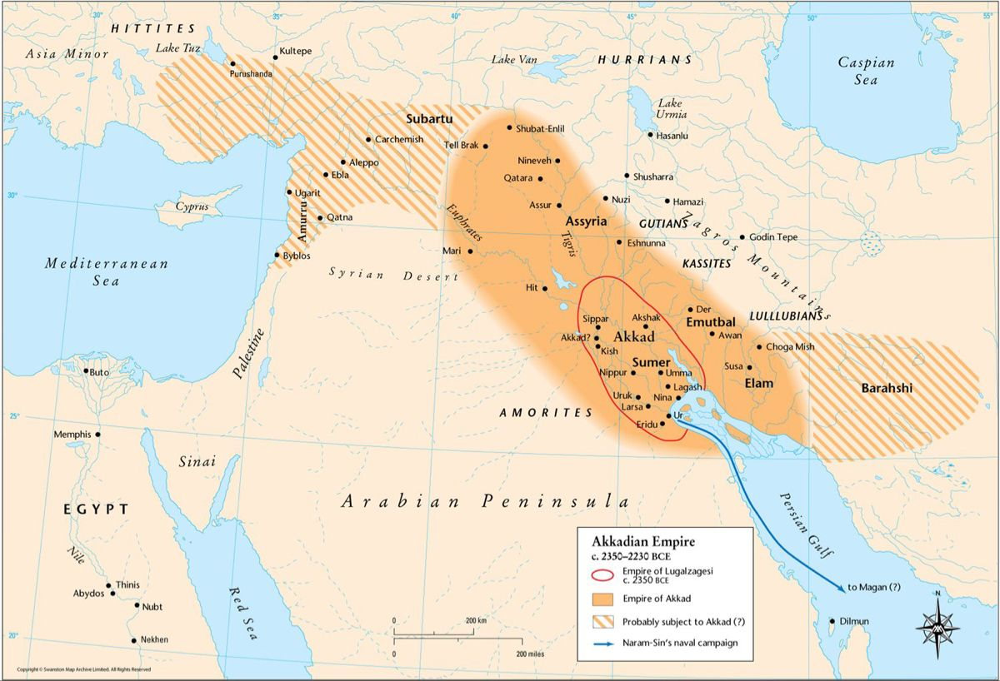
Era: c. 2334 BCE
Region: Mesopotamia (mainly modern-day Iraq)
First Ruler: Sargon of Akkad
The Akkadian Empire is often considered the first true empire in history. Under Sargon of Akkad, it
unified multiple Mesopotamian city-states under centralized rule and expanded power beyond a single
city. It is especially known for early imperial administration over diverse peoples and for setting
a model of empire-building that later states followed.
年代: 紀元前2334年頃
地域: メソポタミア（主に現在のイラク）
初代支配者: サルゴン（アッカド）
アッカド帝国は世界最初の本格的な帝国とされる。サルゴンが複数の都市国家を統合し、単一都市を超えた広域支配を実現した。多民族を管理する統治の枠組みを示し、後の帝国形成のモデルとなった点で有名である。
0
♥
Neo-Assyrian Empire
新アッシリア帝国
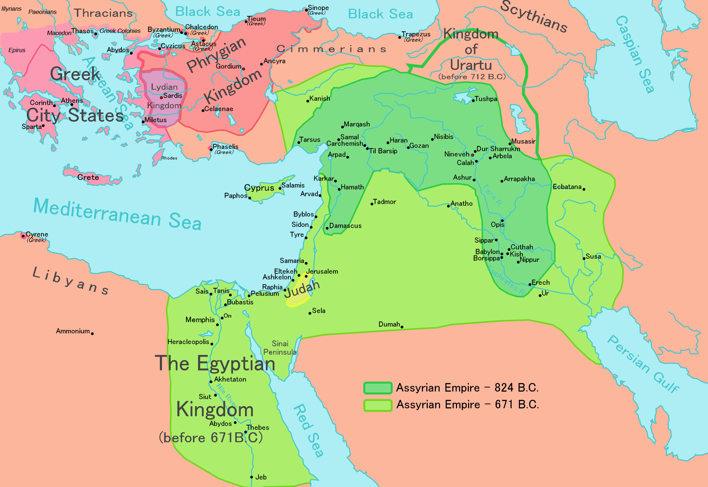
Era: c. 900 BCE
Region: Mesopotamia and the Near East
First Ruler: Ashurnasirpal II
The Neo-Assyrian Empire became a dominant power through highly organized warfare and provincial
administration. It is well known for disciplined armies, large-scale deportations, and intimidation
tactics used to control vast territories. Its efficient system of governors and tribute helped
maintain one of the strongest empires of the ancient Near East.
年代: 紀元前900年頃
地域: メソポタミア〜オリエント地域
初代支配者: アッシュール・ナツィルパル2世
新アッシリア帝国は軍事力と属州統治で古代オリエントの覇者となった。規律ある軍隊、強制移住、威圧による支配が有名である。総督制度や貢納（みつぎ）によって広大な領域を管理した点が特徴。
0
♥
Achaemenid Persian Empire
アケメネス朝ペルシア帝国
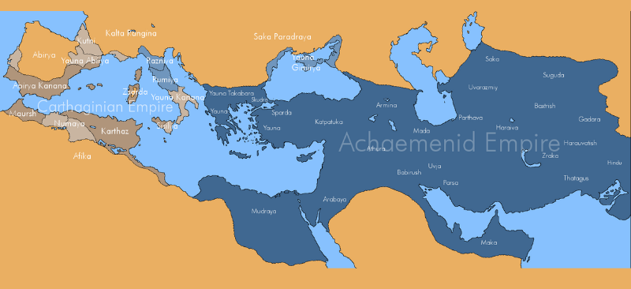
Era: c. 550 BCE
Region: From Iran across the Near East
First Ruler: Cyrus the Great
Founded by Cyrus the Great, the Achaemenid Empire was the first to rule on a continental scale. It
is especially known for its satrapy (provincial) system, major infrastructure such as the Royal
Road, and a reputation for respecting local cultures and religions. This administrative flexibility
helped it govern an enormous, diverse empire.
年代: 紀元前550年頃
地域: イランを中心にオリエント全域
初代支配者: キュロス2世（大王）
アケメネス朝ペルシア帝国はキュロス2世（大王）により成立し、史上初の大規模世界帝国となった。サトラップ（総督）制度、王の道などの交通網、そして比較的寛容な統治が有名で、多民族帝国を安定して運営した。
0
♥
Macedonian Empire
マケドニア帝国
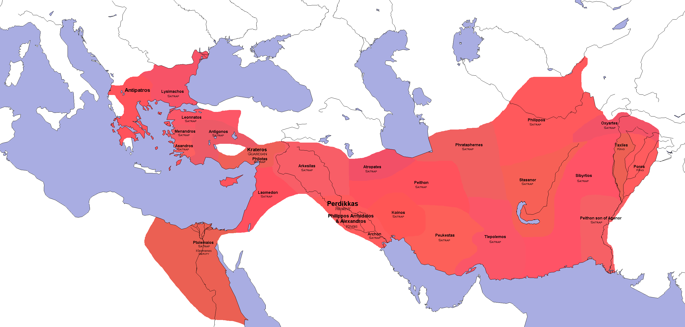
Era: c. 330 BCE
Region: From Greece to Egypt and Asia
First Ruler: Alexander the Great
Built by Alexander the Great, the Macedonian Empire expanded at extraordinary speed. Although it did
not last long as a single empire, it is famous for spreading Hellenistic culture—Greek language,
art, and ideas—across the Near East and Egypt. This cultural blending shaped later kingdoms and
influenced the Mediterranean world for centuries.
年代: 紀元前330年頃
地域: ギリシャ〜エジプト〜アジア
初代支配者: アレクサンドロス大王
マケドニア帝国はアレクサンドロス大王の征服によって急拡大した。短命ながら、ギリシャ語・芸術・思想などを広域に広めた「ヘレニズム文化」の拡散が特に有名で、後の王国や地中海世界に長期的影響を与えた。
0
♥
Roman Empire
ローマ帝国
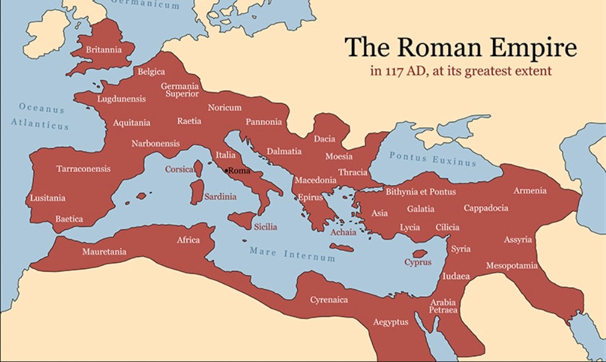
Era: 27 BCE – 476 CE (Western Roman Empire)
Region: Mediterranean world (centered in Rome)
First Emperor: Augustus
The Roman Empire was one of the most influential empires in human history. Under Augustus, it
established long-term stability often described as the Pax Romana and built a highly effective
system of governance. Rome is best known for Roman law, engineering achievements like roads and
aqueducts, and a professional military that secured vast borders. Its cultural legacy, shaped
through the Greco-Roman tradition, influenced later Europe through institutions, language, and
political ideas.
年代: 紀元前27年〜西暦476年（西ローマ帝国）
地域: 地中海世界（中心：ローマ）
初代皇帝: アウグストゥス
ローマ帝国は人類史上最も影響力の大きい帝国の一つである。アウグストゥスのもとでパクス・ロマーナと呼ばれる安定期が生まれ、統治制度が整備された。ローマ法、道路網・水道橋などの土木技術、職業軍の存在が有名である。ギリシャ文化を吸収したギリシャ・ローマ文化は、後のヨーロッパに制度・言語・政治思想として受け継がれた。
0
♥
Han Empire (Han Dynasty)
漢帝国（漢王朝）
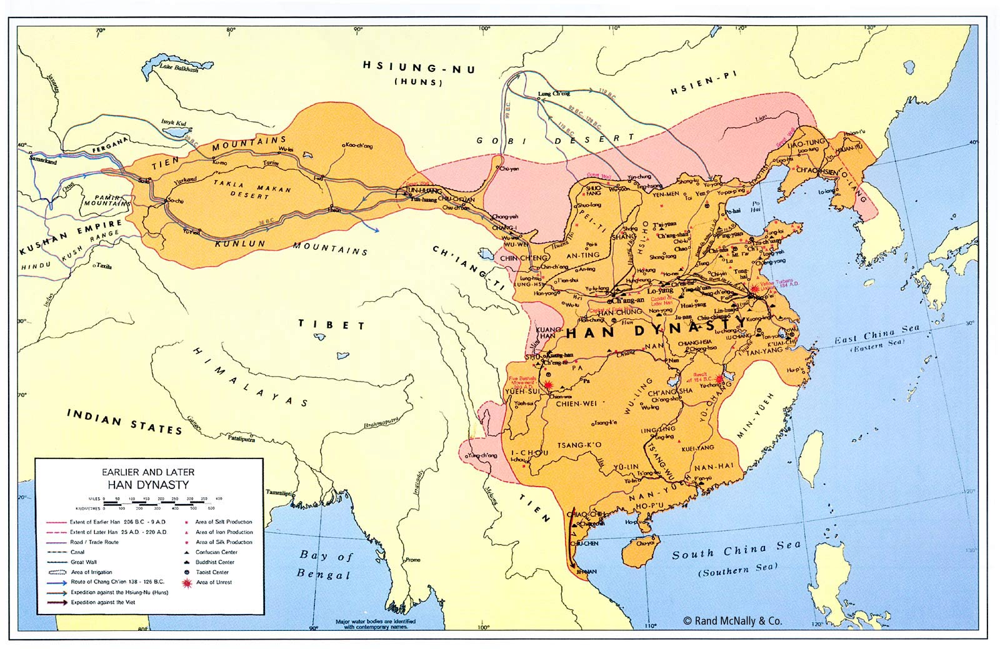
Era: 202 BCE – 220 CE
Region: East Asia (centered in China)
First Emperor: Liu Bang (Emperor Gaozu)
The Han Empire shaped Chinese political and cultural identity for centuries through long-lasting
institutions and stable rule. Important point: the imperial system began earlier under Qin Shi Huang
of the Qin Dynasty (the first emperor of unified China), but the Han inherited that system and made
it durable and practical over the long term. The Han is especially known for establishing Confucian
bureaucracy as a governing ideal and for expanding Silk Road trade, which helped connect China with
wider Eurasian networks—this is a major reason why “Han” became a lasting identity name.
年代: 紀元前202年〜西暦220年
地域: 東アジア（中心：中国）
初代皇帝: 劉邦（漢高祖）
漢帝国は長期に安定した統治と制度によって、中国の政治・文化の骨格を作った。重要点として、皇帝制度そのものは秦始皇帝（秦）が中国を統一した際に始まったが、漢はその仕組みを受け継ぎ、長期運用できる形に定着させた。儒教官僚制の確立や、シルクロード交易の拡大が特に有名で、こうした影響の大きさが「漢」という名称が後世まで残る理由の一つになっている。
0
♥
Byzantine Empire
ビザンツ帝国（東ローマ帝国）
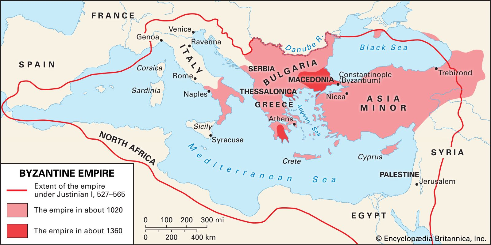
Era: 330 – 1453
Region: Eastern Mediterranean (centered in Constantinople)
First Emperor: Constantine the Great
The Byzantine Empire continued the Roman imperial tradition in the East for over a thousand years.
It is best known for preserving Roman law and administration, developing Orthodox Christianity, and
producing a rich imperial culture centered on Constantinople. Byzantium also acted as a bridge
between the classical world and medieval Europe, influencing diplomacy, art, and religion across the
region.
年代: 330年〜1453年
地域: 東地中海（中心：コンスタンティノープル）
初代皇帝: コンスタンティヌス1世
ビザンツ帝国は東ローマとしてローマ帝国の伝統を千年以上継承した。ローマ法と行政の保存、正教会文化の形成、コンスタンティノープルを中心とする皇帝文化が有名である。古典世界と中世ヨーロッパをつなぐ橋渡しとして、外交・芸術・宗教に大きな影響を与えた。
0
♥
Islamic Caliphates (Umayyad & Abbasid)
イスラム帝国（ウマイヤ朝・アッバース朝）
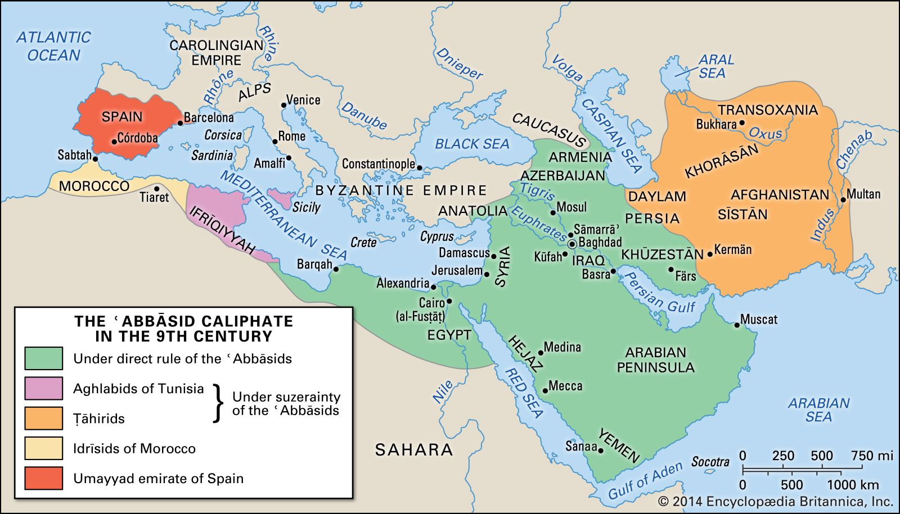
Era: 7th – 13th century CE
Region: Middle East, North Africa, parts of Europe and Asia
First Ruler: Abu Bakr
The early Islamic empires expanded rapidly and formed a vast political and cultural zone linked by
trade and scholarship. They are especially known for the Islamic Golden Age, when major advances
were made in mathematics, medicine, astronomy, and philosophy. Through translation and learning
networks, Islamic scholars preserved and developed knowledge that later influenced wider Eurasian
history.
年代: 7世紀〜13世紀頃
地域: 中東・北アフリカ・ヨーロッパ南部・アジア
初代支配者: アブー・バクル
初期イスラム帝国は急速に拡大し、交易と学問によって結ばれた広域圏を形成した。数学・医学・天文学・哲学などが発展した「イスラム黄金時代」が特に有名である。翻訳と学術ネットワークを通じ、知識の保存と発展に大きく貢献した。
0
♥
Mongol Empire
モンゴル帝国
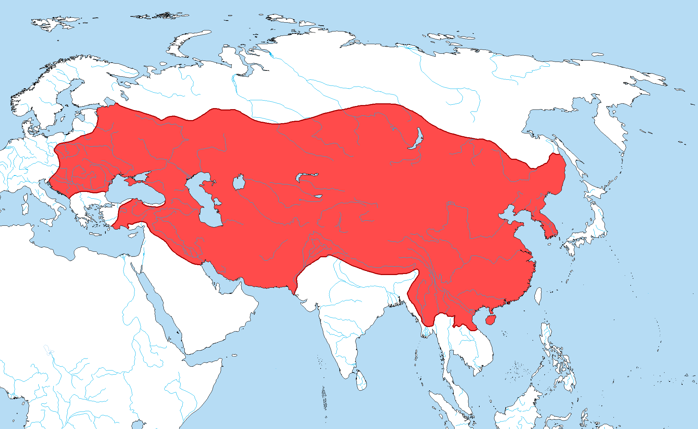
Era: 1206 – 1368
Region: Eurasia (largest land empire)
First Ruler: Genghis Khan
Founded by Genghis Khan, the Mongol Empire became the largest land empire in history. It is best
known for extraordinary military mobility and for creating conditions that made long-distance trade
safer across Eurasia, often described as the Pax Mongolica. This helped intensify connections
between East and West through commerce, diplomacy, and cultural exchange.
年代: 1206年〜1368年
地域: ユーラシア（史上最大級の陸上帝国）
初代支配者: チンギス・ハン
モンゴル帝国はチンギス・ハンによって成立し、史上最大の陸上帝国となった。高い軍事機動力に加え、ユーラシアの交易路を比較的安全にし、東西交流を活発化させた（パクス・モンゴリカ）点で特に有名である。
0
♥
Ottoman Empire
オスマン帝国
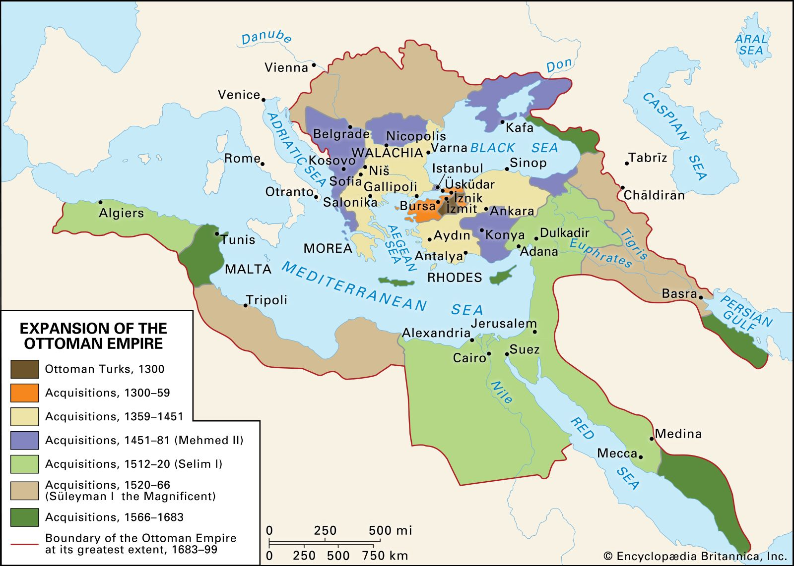
Era: 1299 – 1922
Region: Middle East, Balkans, Eastern Mediterranean
First Ruler: Osman I
Founded by Osman I, the Ottoman Empire became a long-lasting multi-ethnic state that controlled key
crossroads of trade and politics. It is well known for gunpowder-era military power, sophisticated
administration, and major architectural achievements. Its capture of Constantinople in 1453 is one
of its most famous turning points, reshaping regional power for centuries.
年代: 1299年〜1922年
地域: 中東・バルカン・地中海東部
初代支配者: オスマン1世
オスマン帝国はオスマン1世によって成立し、多民族国家として長期にわたり要衝を支配した。火器時代の軍事力、洗練された行政制度、建築文化が有名である。特に1453年のコンスタンティノープル攻略は、地域の勢力図を大きく変えた象徴的出来事として知られる。
0
♥
Aztec Empire
アステカ帝国
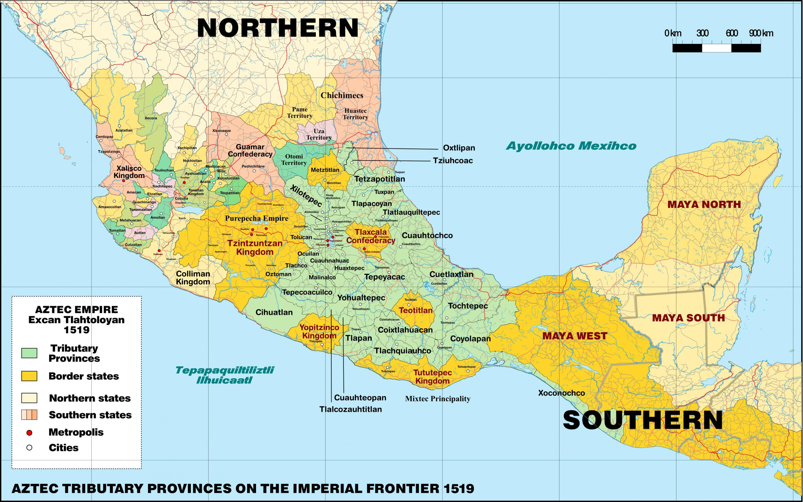
Era: 14th – 16th century CE
Region: Central Mexico (centered on Tenochtitlan)
First Ruler: Acamapichtli
The Aztec Empire grew into a powerful state centered on the lake-city of Tenochtitlan. It is best
known for military expansion, tribute networks that supported the capital, and monumental temple
architecture. Aztec society also developed a complex ritual religion and strong political
organization that shaped much of central Mesoamerica before Spanish conquest.
年代: 14世紀〜16世紀頃
地域: メキシコ中央部（中心：テノチティトラン）
初代支配者: アカマピチトリ
アステカ帝国は湖上都市テノチティトランを中心に強大化した。軍事的拡大、首都を支えた貢納ネットワーク、巨大神殿建築が特に有名である。複雑な儀礼宗教と政治組織を持ち、スペイン征服以前の中部メソアメリカに大きな影響を与えた。
0
♥
Inca Empire
インカ帝国
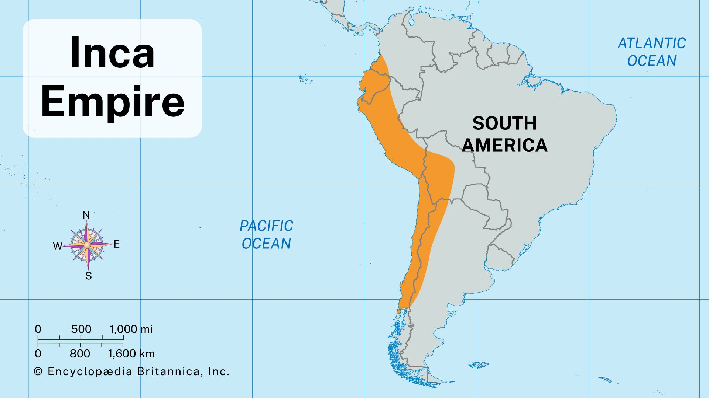
Era: 15th – 16th century CE
Region: Andes Mountains (western South America)
First Ruler: Pachacuti
The Inca Empire became the largest empire in pre-Columbian America, especially expanding under
Pachacuti. It is best known for the vast road network (Qhapaq Ñan), terrace farming adapted to
mountain environments, and a highly organized administrative system capable of governing huge
territories without a full writing system. Inca engineering and state planning remain some of the
most impressive in the ancient Americas.
年代: 15世紀〜16世紀頃
地域: アンデス山脈地域（南アメリカ西部）
初代支配者: パチャクティ
インカ帝国はパチャクティの時代に大きく拡大し、アメリカ大陸最大級の帝国となった。広大な道路網（カパック・ニャン）、山岳地帯に適応した段々畑、高度に組織化された行政制度が特に有名である。完全な文字体系がなくても大領域を統治できた国家運営と土木技術は、古代アメリカでも屈指の水準とされる。
0
♥
Spanish Empire
スペイン帝国
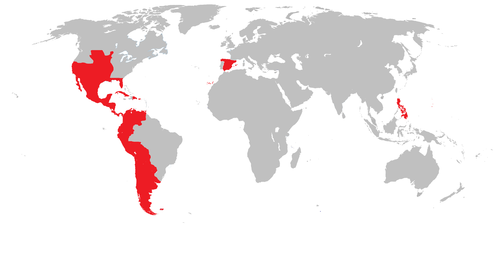
Era: 16th – 19th century CE
Region: Europe, the Americas, parts of Asia and Africa
First Monarchs: Ferdinand II & Isabella I
The Spanish Empire was one of the first truly global empires in history. It expanded rapidly after
the voyages of Christopher Columbus under the Spanish Crown and established colonies across the
Americas, Asia, and Africa. The empire is especially known for transoceanic conquest, the spread of
Christianity, and global trade networks that connected Europe with the New World. Vast inflows of
silver and gold also played a major role in shaping early modern global economics.
年代: 16世紀〜19世紀頃
地域: ヨーロッパ・アメリカ大陸・アジア・アフリカの一部
最初の君主: フェルナンド2世 ＆ イサベル1世
スペイン帝国は人類史上最初期の世界帝国の一つである。コロンブスの航海以降、スペイン王権のもとで急速に拡大し、アメリカ大陸を中心に広大な植民地を築いた。キリスト教の布教、海を越えた征服、そしてヨーロッパと新大陸を結ぶ世界規模の交易網が特に有名である。大量の銀や金の流入は、近代初期の世界経済に大きな影響を与えた。
0
♥
British Empire
大英帝国
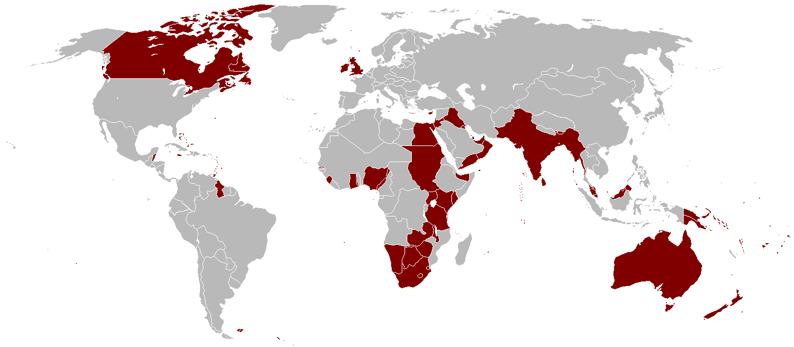
Era: 18th – 20th century CE
Region: Global (largest empire by territory)
First Monarch: Elizabeth I
The British Empire became the largest empire in history by territory, expanding through naval power,
trade, and colonization. It is well known for shaping global commerce, modern capitalism, and
international politics. The spread of the English language, legal systems, and parliamentary
traditions left a lasting global legacy that continues to influence the modern world.
年代: 18世紀〜20世紀頃
地域: 世界規模（領土面積で史上最大級）
最初の君主: エリザベス1世
大英帝国は海軍力・貿易・植民地支配を背景に拡大し、領土規模で史上最大の帝国となった。世界の商業や近代資本主義、国際政治に大きな影響を与えた点で知られる。英語、法制度、議会政治の広がりは、現在の世界にも強い影響を残している。
0
♥